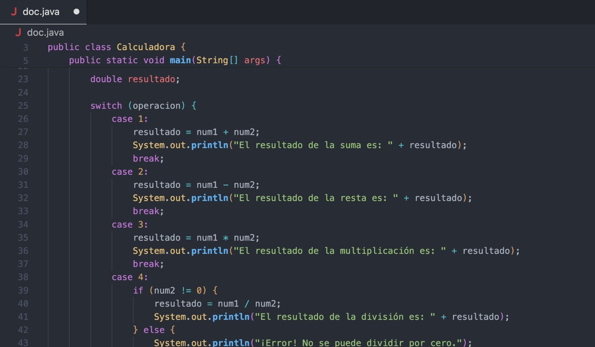
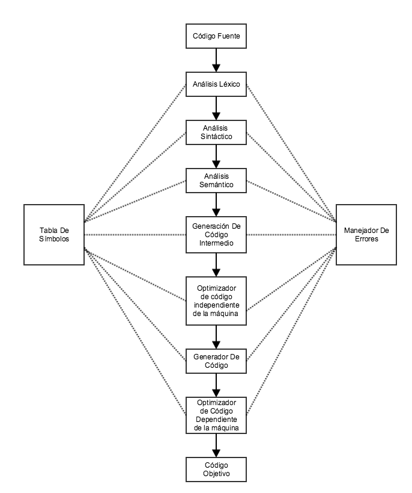

Fases del Proceso de Compilación
Un compilador es un programa que traduce un código fuente escrito en un lenguaje de programación de alto nivel a un lenguaje de bajo nivel o código máquina que puede ser ejecutado por una computadora.
Su objetivo principal es detectar errores, optimizar el código y generar un programa ejecutable eficiente.

El código fuente es el conjunto de instrucciones escritas por el programador.
Lee el código fuente carácter por carácter y genera tokens.
Construye el árbol sintáctico verificando la gramática del lenguaje.
Comprueba tipos de datos, declaraciones y uso correcto de variables.
Produce una representación independiente de la máquina.
Reduce instrucciones innecesarias y mejora el rendimiento.
Genera instrucciones específicas para el procesador.
Une bibliotecas y módulos para crear el programa ejecutable.
La tabla de símbolos es una estructura de datos utilizada por el compilador para almacenar información sobre los identificadores encontrados en el programa fuente, como variables, constantes, funciones, procedimientos y parámetros.
Esta tabla es utilizada principalmente durante el análisis léxico, sintáctico y semántico para verificar declaraciones, tipos de datos y alcances de los identificadores.
int edad = 20;
float salario = 1500.50;
char inicial = 'M';
| Identificador | Tipo | Valor | Categoría |
|---|---|---|---|
| edad | int | 20 | Variable |
| salario | float | 1500.50 | Variable |
| inicial | char | 'M' | Variable |
Sin la tabla de símbolos el compilador no podría identificar correctamente las variables, funciones y constantes utilizadas en el programa, lo que dificultaría la detección de errores y la generación del código final.
El manejador de errores es un componente del compilador encargado de detectar, reportar y, cuando es posible, recuperar errores encontrados durante las distintas fases de compilación.
Su objetivo es proporcionar mensajes claros al programador para facilitar la corrección del código fuente.
Ocurre cuando aparecen símbolos o palabras no válidas.
int @numero = 10;
El símbolo '@' no pertenece al lenguaje.
Se produce cuando no se respeta la gramática.
if(x > 5
{
}
Falta cerrar el paréntesis.
El código tiene estructura correcta pero significado incorrecto.
int edad;
edad = "veinte";
No se puede asignar texto a un entero.
Aparece cuando el programa ya está corriendo.
int x = 10;
int y = 0;
x / y;
División entre cero.
Línea 15:
Error Sintáctico:
Se esperaba ')' antes de '{'
El manejador de errores permite que el compilador informe de manera precisa los problemas encontrados en el código fuente, ayudando al programador a corregirlos rápidamente y mejorando la calidad del software.
